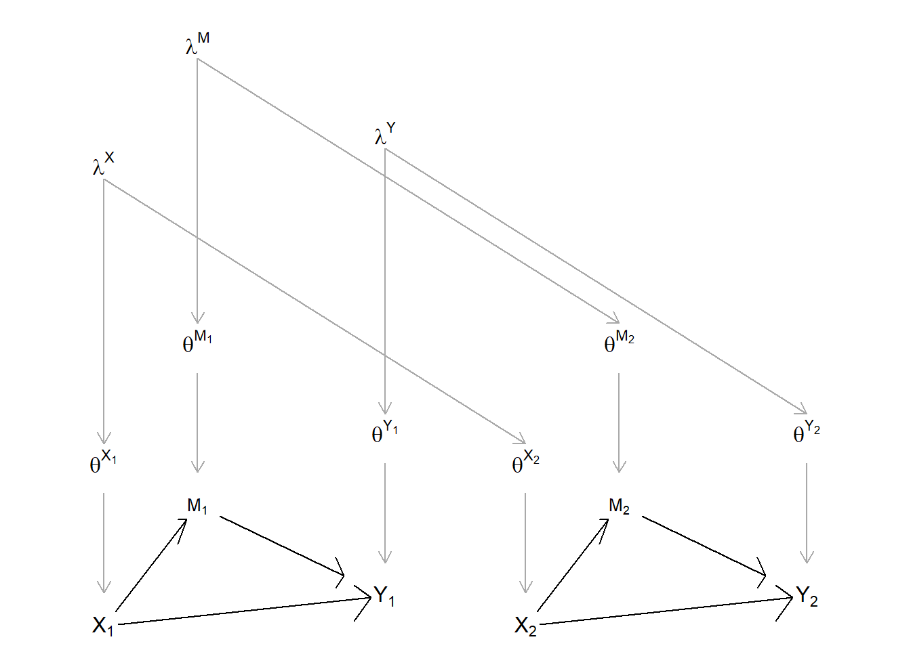
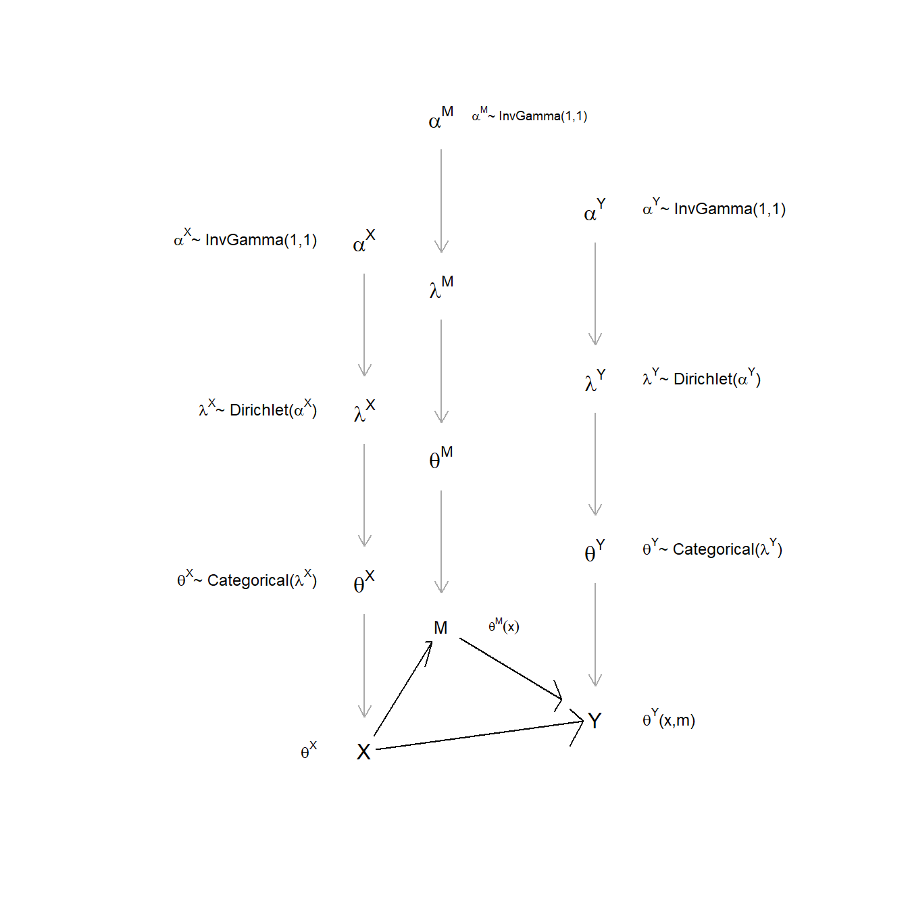
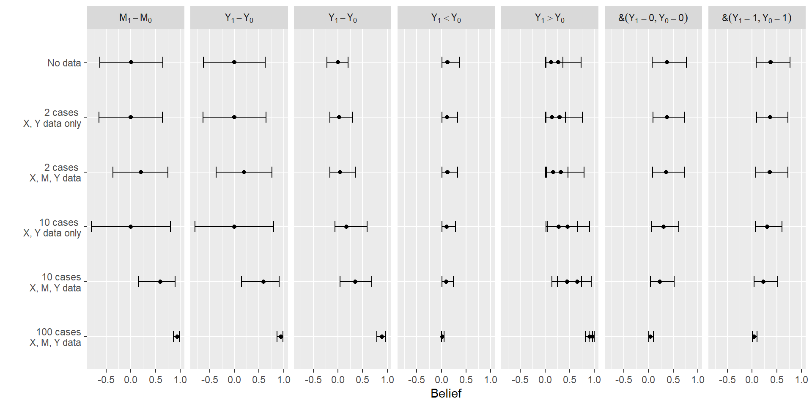
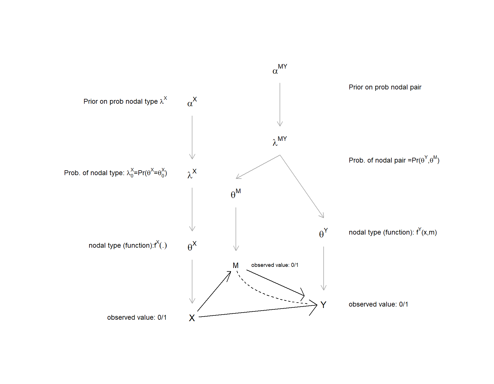
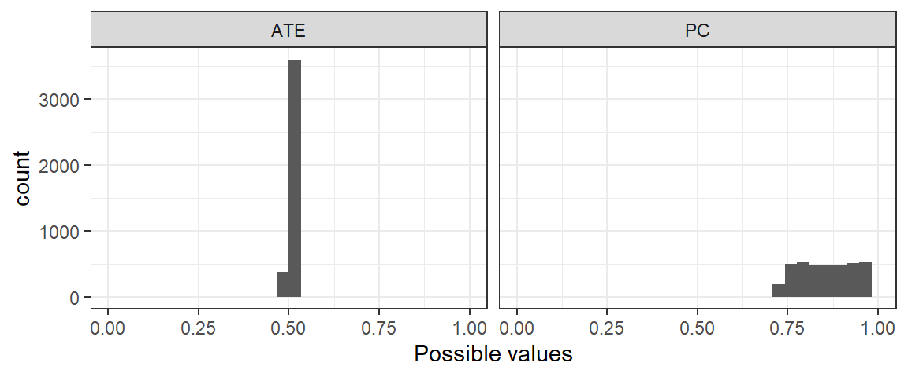
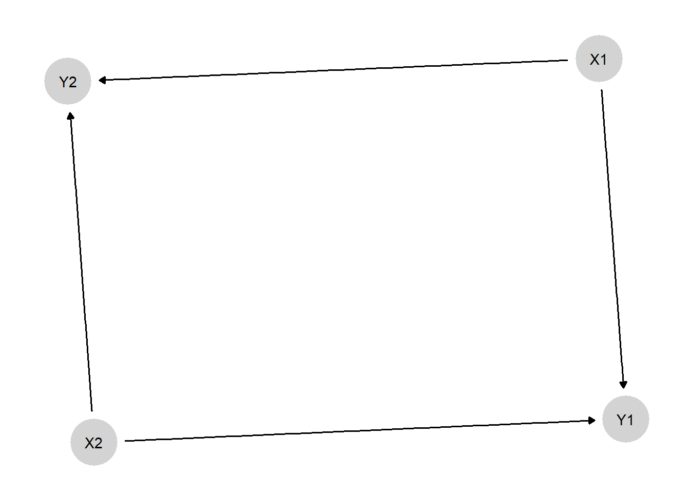
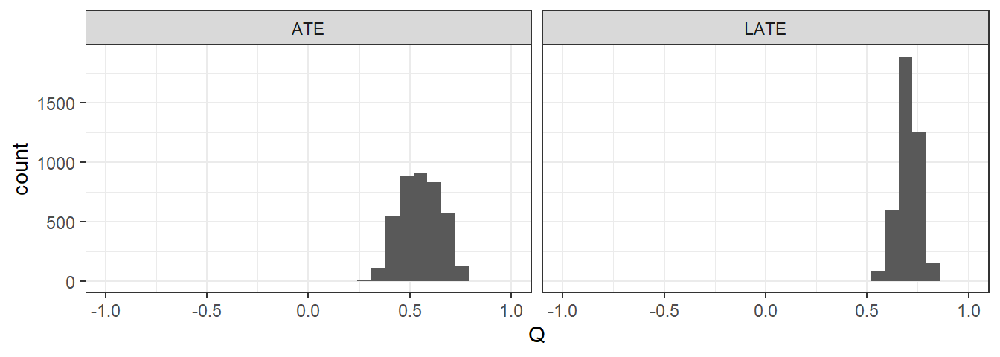
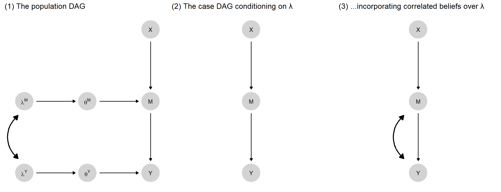

9 Integrated Inferences
Chapter summary
We extend the analysis from Chapter 7 to multi-case settings and demonstrate how we can use the approach for mixed-method analysis. When analyzing multiple cases, we update our theory from the evidence and can then use our updated theory to draw both population- and case-level inferences. While single-case process tracing is entirely theory-informed, mixed-data inference is thus also data-informed. The approach can integrate information across any arbitrary mix of data structures, such as “thin” data on causes and outcomes in many cases and “thicker” process evidence on a subset of those cases.
We now extend the approach introduced in Chapter 7 to show how we can undertake causal-model-based causal inference using data on multiple cases.
In the single-case process-tracing setup, we start with a set of beliefs about causal effects at each node (i.e., about the distribution of nodal types in the population) and apply those beliefs, in combination with case-specific evidence, to the case at hand. The model itself remains static in single-case process tracing. When we draw on data from multiple cases, in contrast, we can use these data to update the model—to learn about the distribution of causal effects in the population. We can then use this updated, or trained, model to answer questions about causal relationships at the population level. We can also use this updated model at the case level—to undertake process-tracing on a given case with a model informed by observations of a wider set of cases. This means that, rather than the probative value of process-tracing evidence being supported only by our theoretical assumptions, probative value can emerge from the data itself.
Moreover, as we will show, causal models offer a powerful approach for mixing methods: that is, for integrating information drawn from different kinds of data strategies. We can readily update a causal model with a dataset that includes, for instance, data on only the explanatory variable and the outcome for a large set of cases and intensive data on causal processes for a subset of those cases.
We start the chapter with a conceptual point: As we demonstrate in the next section, the inferential logic introduced in Chapter 7 for single-case analysis can be used as is for multi-case analysis. Thus, the conceptual work for mixed-methods inference from causal models has, in a sense, been done already. We then show how we can deploy the same machinery, under assumptions regarding independence across cases, to learn about general causal processes. We explore the main payoffs of the approach: the ways in which it allows us to mix methods, integrate population- and case-level inference, and learn about causality in the absence of causal identification. And then, in the chapter’s final section, we illustrate several ways in which the baseline approach can be extended—to the analysis of nonbinary data and to modeling measurement error and spillovers.
9.1 From One Unit to Many
Conceptualized correctly, there is no deep difference between the logic of inference used in single-case and in multi-case studies. To be clear, our claim here is not that any single “case” can be disaggregated into many “cases,” thereby allowing for large-\(n\) analysis of single units (King, Keohane, and Verba 1994). Our point is, rather, the opposite: Fundamentally, model-based inference always involves comparing a pattern of data with the logic of the model. Studies with multiple cases can, in fact, be conceptualized as single-case studies: We always draw our inferences from a single collection of clues, whether those clues have come from one or from many units.
In practice, when we move from a causal model with one observation to a causal model with multiple observations, we can use the structure we introduced in Chapter 7 by simply replacing nodes that have a single value (i.e., scalars) with nodes containing multiple values (i.e., vectors) drawn from multiple cases. We then make inferences about causal relations between nodes from observation of the values of multiple nodes’ vectors.
To illustrate, consider the following situation. Suppose that our model includes a binary treatment, \(X\), assigned to 1 with probability 0.5; an outcome, \(Y\); and a third “clue” variable, \(K\), all observable. We posit an unobserved variable \(\theta^Y\), representing \(Y\)’s nodal type, with \(\theta^Y\) taking on values in \(\{a,b,c,d\}\) with equal probability. (We interpret the types in \(\{a,b,c,d\}\) as defined in Section 2.1.) In addition to pointing into \(Y\), moreover, \(\theta^Y\) affects \(K\)—in a rather convenient way. In particular, \(K=1\) whenever \(X\) has an effect on \(Y\), while \(K=1\) with a 50% probability otherwise. In other words, our clue \(K\) is informative about \(\theta^Y\), a unit’s nodal type for \(Y\). As familiar from Chapter 7 and Chapter 8, when we observe \(K\) in a case, we can update on \(X\)’s effect on \(Y\) within the case since that \(K\) value will have different likelihoods under different values of \(\theta^Y\).
So far, we have described the problem at the unit level. Let’s now consider a two-case version of this setup. We do this by exchanging scalar nodes for vectors:
- We have a treatment node, \(\mathbf X\), that can take on one of four values, \((0,0), (0,1), (1,0), (1,1)\) with equal probability. The value (0,0) simply means that \(X=0\) in both cases; the value (0,1) means that \(X\) is \(0\) in the first case and \(1\) in the second case; and so on.
- \(\mathbf \theta^Y\) is now also a vector with two elements, one for each case. \(\mathbf \theta^Y\) can thus take on one of 16 values \((a,a), (a,b),\dots, (d,d)\). We interpret \(\theta^Y=(a,b)\), for instance, to mean that \(Y\)’s nodal type is \(a\) for the first case and \(b\) for the second case. Let us set a uniform prior distribution over these 16 possible values.
- \(\mathbf Y\) is a vector that is generated by \(\mathbf \theta^Y\) and \(\mathbf X\) in an obvious way. For instance, \(\mathbf X=(0,0), \theta^Y=(a,b)\) generate outcomes \(\mathbf Y=(1,0)\).
- The vector \(\mathbf K\) has the same domain as \(\mathbf X\) and \(\mathbf Y\). Consistent with the setup above, for any case \(j\), the element \(K_j=1\) with probability \(1.0\) if \(\mathbf\theta^Y_{j}=b\) and with probability \(0.5\) if \(\mathbf\theta^Y_{j} \neq b\).
Now consider a causal estimand. In a single-case setup, we might ask whether \(X\) has an effect on \(Y\) in the case. For a multi-case setup, we might ask what the Sample Average Treatment Effect (SATE), \(\tau\), is. Note a subtle difference in the nature of the answers we seek in these two situations. In the first (single-case) instance, our estimand is binary—of the form: “Is the case a \(b\) type?”—and our answer is a probability. In multi-case estimation of the SATE, our estimand is categorical, and our answer will be a probability distribution: We are asking, “what is the probability that \(\tau\) is 0.5?,” “What is the probability that \(\tau\) is 0.5?,” and so on.
While the estimand shifts, we can use the tools introduced for single-case process tracing in Chapters Chapter 7 and Chapter 8 to analyze these data from multiple cases. Consider the probability that \(\tau=1\). A SATE of \(1\) would require that \(X\) have a positive effect on \(Y\) in both cases, that is, that \(\theta^Y = (b,b)\). Under our uniform priors, this has just a 1 in 16 probability.
Now suppose that we observe that, for both units, \(X=1\) and \(Y=1\). This data pattern is consistent with only four possible \(\theta\) vectors: \((b,b), (d,d), (b, d)\), and \((d,b)\). Moreover, each of these four is equally likely to produce the data pattern we see, though only one of them gets us \(\tau=1\). So our belief that \(\tau=1\) now shifts from 1 in 16 to 1 in 4.
Next, suppose that we further look at \(K\) in both cases and observe the data pattern \(\mathbf K = (1,1)\). The probability of this pattern for \(\theta\) vector \((b,b)\) (\(\tau = 1\)) is 1. For the other three possible type vectors \((d,d), (b, d), (d,b)\), the probability of this \(\mathbf K\) pattern is \(0.25, 0.5,\) and \(0.5\), respectively. We apply Bayes’ rule now simply by dividing the probability of observing the \(K\) data pattern if the hypothesis (\(\tau = 1\)) is true by the (unnormalized) sum of the probabilities of the \(K\) data pattern for all four \(\theta\) vectors consistent with \(X=1, Y=1\): so \(1/(1 + 0.25 + 0.5 + 0.5) = 4/9\).
We can similarly figure out the posterior probability on any possible value of \(\tau\) and build up a full posterior distribution. And we can do so given any \(K\) pattern (i.e., \(\mathbf K\) realization) across the cases. Thus, if we observe \(\mathbf K = (0,1)\), the probability of this pattern for type vector \((b,b)\) (\(\tau = 1\)) is 0. For the type vectors \((d,d), (b, d), (d,b)\), it is \(0.25, 0, 0.5\), respectively. Table 9.1 shows the posterior distribution over a set of discrete SATE values given different \(K\) patterns observed.
| \(X\) pattern | \(Y\) pattern | \(K\) pattern | \(\tau = -1\) | \(\tau = -.5\) | \(\tau = 0\) | \(\tau = .5\) | \(\tau = 1\) |
|---|---|---|---|---|---|---|---|
| (1,1) | (1,1) | (1,1) | 0 | 0 | 1/9 | 4/9 | 4/9 |
| (1,1) | (1,1) | (1,0) | 0 | 0 | 1/3 | 2/3 | 0 |
| (1,1) | (1,1) | (0,0) | 0 | 0 | 1 | 0 | 0 |
The conceptual point is that the general logic of inference with multiple units is the same as that with one unit. In both situations, we work out the likelihood of any given data pattern for each possible set of values of model parameters, and then update our beliefs about those parameters accordingly. From our posterior distribution over fundamental model parameters, we can then derive a posterior distribution over the possible answers to any causal query, such as the values of \(\tau\).
However, while conceptually simple, thinking of nodes on a DAG as representing outcomes for all units implies models of extraordinary complexity, whose complexity rises rapidly with the number of cases. For instance, consider the model in Figure 9.1 in which \(X = (X_1, X_2)\) has a direct effect on \(Y = (Y_1, Y_2)\) as well as an indirect effect via \(M = (M_1, M_2)\). The implied \(\theta^X\) vector has four possible values. The \(\theta^M\) vector has \(4^4 = 256\) possibilities, and \(\theta^Y\) has \(4^{4\times4} =\) 4,294,967,296. Together, this means about 5 billion causal types for just two binary units. The mind boggles.
Fortunately, we can use a different approach.
9.2 General Procedure
To illustrate the logical parallel between single-case and multi-case inference, we have worked through a problem of sample-level inference: In the last section, we imagined that we were trying to estimate the causal effect for the specific set of cases that we were observing. However, for the remainder of this chapter, and for the rest of the book, when we discuss multi-case analysis, we will set our sights primarily on learning about models that describe realizations of general processes. That is, we will seek to learn about populations. We will then use our updated, general models at two levels: To address queries about the population and to address queries about specific cases. This means that we will bracket sample-level inference: That is, studying a set of cases in order to estimate some causal quantity for that sample. It is entirely possible to pose sample-level queries within the framework, but this will not be our focus.
There are two reasons motivating our focus on general models applicable to a population. The first is that we are interested in learning across cases. Our strategy for learning across cases is to learn about population-level parameters. We will use data on a set of cases to update our beliefs about a general model that we think is of relevance for other cases drawn from the same population.
The second reason for structuring learning around populations is more practical. If we can think of units as draws from a large population, and then invoke independence assumptions across types, then we can greatly reduce the kind of complexity we discussed at the end of the last section. In the two-case example above, the vector \(\theta^Y\) could take on any of 16 values (\((a,a), (a,b),\ldots (d,d)\)). In any given case, however, \(\theta^Y\) can take on only four possible values (\(\{a,b,c,d\}\)). So here is the simplifying move we make: Rather than trying to learn about the probabilities of 16 possible vector values for the two cases we’re studying (or of the 1,048,576 values for 10 cases), we instead turn this into a problem of learning about how the population is divvied up among just four nodal types. And if we know about the relative proportions of these types in a population, we are then in a position to estimate the probability that any case drawn from this population is of a given type.
Thinking about inference in this way simplifies the problem by greatly reducing the parameter space, but we do not get this payoff for free. It requires invoking the assumption that (potential) outcomes in one unit are independent of (potential) outcomes in all other units. If we cannot stand by that assumption, then we will need to build independence failures into our models, in ways we discuss later in this chapter.
As we move to population-level inference, we will continue to use simple DAGs to describe causal structures. When working with populations, however, we will now think of a DAG as standing in for a more complex multi-case structure. We can think of each individual unit as having an identical unit-level DAG and as being connected to one another via nodes that are common across the population. Figure 9.2 illustrates (see also Figure 3 in Chickering and Pearl (1996) for an example of a similar graph for a DAG with unobserved confounding). Here we replicate, twice, a simple unit-level DAG involving direct effects from \(X\) to \(Y\) as well as indirect effects via \(M\). We now subscript the unit-level substantive nodes to indicate the different values they can take on for each of the two units. Each unit also has separate, subscripted \(\theta\) terms, implying that nodal types can vary across units, too. The unit-level \(\theta\) terms are linked, however, through dependence on common \(\lambda\)s, representing for each node the population-level shares of its nodal types. Thus, since \(\lambda^X\) represents the population-level distribution of \(\theta^X\), \(\lambda^X\) matters for the values that both \(\theta^{X_1}\) and \(\theta^{X_2}\) will take on and in turn, for the values that \(X_1\) and \(X_2\) will take on. We conceptualize the relationships similarly for the other nodes.
Critically, we can deploy the principles of conditional independence on a DAG, explored in Chapter 7, to articulate how we can learn about one case from another. We can learn about \(\theta^{M_2}\) and about \(M_2\) from observing \(M_1\), for instance, because they are all descendants of the population-level node \(\lambda^M\)—and we know that information flows across a “forked path.” The DAG elucidates less obvious possibilities, too. For instance, we can learn about \(\theta^{Y_2}\) from observing \(M_1\) if we also know \(Y_1\), since \(Y_1\) acts as a collider for \(M_1\) and \(\lambda^Y\); thus, observing \(Y_1\) opens a path between \(M_1\) and \(\theta^{Y_2}\).1 Moreover, all of this cross-case learning depends on the \(\lambda\)s being (at least somewhat) unknown: If the \(\lambda\)s are known, then the path between unit DAGs is blocked, so there can be no learning across cases. Put more intuitively, we can transfer knowledge across cases if we can learn from (some) cases about a population to which other cases also belong—and this strategy depends on the fact that we don’t already know all there is to know about the population.

We now outline the general procedure for multi-case inference. The core steps in this procedure are:
- to figure out all possible causal types implied by a DAG
- to describe a set of distributions over these causal types
- for any distribution over causal types, figure out the likelihood of any data pattern.
With this likelihood in hand, we have enough to update our beliefs over distributions of causal types once we encounter the data. With updated beliefs about the distribution of causal types, we are ready, in turn, to pose any causal query of interest. This procedure can be seen as a generalization of the analysis used in Chickering and Pearl (1996) to study compliance. We use the same basic logic here, but now for arbitrary DAGs, data structures, and queries. Appendix shows how to implement all steps in code and provides a replication of the analysis in Chickering and Pearl (1996).
9.2.1 Setup
We now describe the procedure in more detail. The key steps are as follows.
A DAG. As with process tracing, we begin with a graphical causal model specifying possible causal linkages between nodes. Our “chain” model for instance has DAG: \(X \rightarrow M \rightarrow Y\). As described above, we now imagine this DAG standing in for a larger (“extended”) DAG in which this DAG is replicated for each unit and connected to other unit DAGs by population-level parameters (\(\lambda\)s).
Nodal types. Just as in process tracing, the DAG and variable ranges define the set of possible nodal types in the model—the possible ways in which each variable is assigned (if a root node) or determined by its parents (otherwise). For the \(X \rightarrow M \rightarrow Y\) model, there are two types for \(\theta^X\), four for \(\theta^M\), and four for \(\theta^Y\).
Causal types. A full set of nodal types gives rise to a full set of causal types, encompassing all possible combinations of nodal types across all nodes in the model. We let \(\theta\) denote an arbitrary causal type. For an \(X \rightarrow M \rightarrow Y\) model, one possible causal type would be \(\theta = (\theta^X_1, \theta^M_{01}, \theta^Y_{01})\).
Parameters. As before, we use \(\lambda^j\) to denote the population shares of the elements of \(\theta^j\) (the nodal types) for a given node, \(j\). Recall that in process tracing, we sought to learn about \(\theta\), and our priors were given by \(\lambda\). When we shift to multi-case inference, \(\lambda\) becomes the parameter we want to learn about: we seek to learn about the shares of types in a population (or, equivalently, about the probability of different types arising in cases drawn from that population).
Priors. In the process tracing setup, we treat \(\lambda\) as given: We do not seek to learn about \(\lambda\), and uncertainty over \(\lambda\) plays no role. When we get to observe data on multiple cases, however, we have the opportunity to learn both about the cases at hand and about the population. Moreover, our level of uncertainty about population-level parameters will shape our inferences. We thus want our parameters (the \(\lambda\)’s) to be drawn from a prior distribution — a distribution that expresses our uncertainty and over which we can update once we see the data. While different distributions may be appropriate to the task in general, uncertainty over proportions (of cases, events, etc.) falling into a set of discrete categories is usefully described by a Dirichlet distribution, as discussed in Chapter 5. Recall that the parameters of a Dirichlet distribution (the \(\alpha\)’s) can be thought of as conveying both the relative expected proportions in each category and our degree of uncertainty.
With some abuse of graphical representation—we illustrate for only one replicate of the unit-level DAG—Figure 9.3 displays the relationship between the case and population levels, together with an indication of distributions on different quantities.
- \(\theta\) denotes the case-level type with a categorical distribution. That distribution is described by the parameter vector \(\lambda\).
- \(\lambda\) denotes the population-level shares of types. Uncertainty over \(\lambda\) itself is characterized by a Dirichlet distribution, described by parameter vector \(\alpha\).
- \(\alpha\) captures our priors on the distribution of \(\lambda\); in “multilevel” applications we might think of the \(\alpha\) terms as parameters that we want to learn about, in which case we should provide a prior for \(\alpha\).2
9.2.2 Inference
Inference then works by figuring out the probability of the data given different possible parameter vectors, \(\lambda\)s, and then applying Bayes rule. In practice, we proceed as follows.

9.2.2.1 Distributions over Causal Types
We first need to characterize our beliefs over causal types given any possible parameter vector, \(\lambda\). Imagine a draw of one possible value of \(\lambda\) from the prior. This \(\lambda\) vector implies a set of nodal type shares for all nodes. That set of nodal type shares implies, in turn, a distribution over causal types (\(\theta\)), which are just combinations of nodal types. If nodal types are independent of each other, then causal type shares are a simple matter of multiplying nodal-type shares. For instance, the probability of causal type \(\theta = (\theta^X_1, \theta^M_{01}, \theta^Y_{01})\) is simply \(p(\theta|\lambda)=\lambda^X_1\lambda^M_{01}\lambda^Y_{01}\). More generally:
\[p(\theta|\lambda) = \prod_{k,j:\theta^j_k\in\theta}\lambda^j_k\]
9.2.2.2 Data Probabilities
Each causal type, in turn, implies a single data realization or data type. For instance, \(\theta = (\theta^X_1, \theta^M_{01}, \theta^Y_{01})\) implies data \(X=1, M=1, Y=1\) (and only that data type). Let \(D(\theta)\) denote the data type implied by causal type \(\theta\).
A single data type, however, may be implied by multiple causal types. We use \(\Theta(d)\) to denote the set of causal types that imply a given data type:
\[\Theta(d) = \{\theta| D(\theta) = d \}\]
Let \(w_d\) be the probability of a given data type \(d\) (the “event probability”). The probability of a given data type is the sum of the probabilities of all causal types that imply it (given \(\lambda\)). So we have:
\[w_d = \sum_{\theta \in \Theta(d)}p(\theta|\lambda)\]
We use \(\mathbf w\) to denote the vector of event probabilities over all possible data types.
To illustrate, a data type \(d = (X=1, M =1, Y=1)\) is consistent with four different causal types in the \(X\rightarrow M\rightarrow Y\) model: \(\Theta(d) = \{(\theta^X_0, \theta^M_{01}, \theta^Y_{01}), (\theta^X_0, \theta^M_{11}, \theta^Y_{01}), (\theta^X_0, \theta^M_{01}, \theta^Y_{11}), (\theta^X_0, \theta^M_{11}, \theta^Y_{11})\}\). The probability of the data type is then calculated by summing up the probabilities of each causal type that implies the event. We can write this as: \(w_{111}:=\lambda^X_1(\lambda^M_{01} + \lambda^M_{11}))(\lambda^Y_{01} + \lambda^Y_{11})\).
In practice, calculating the full \(\mathbf w\) vector is made easier by the construction of an “ambiguities matrix,” just as for process tracing, which tells us which causal types are consistent with a particular data type, as well as a “parameter matrix,” which tells us which parameters determine the probability of a causal type.
We use Tables Table 9.2 and Table 9.3 to illustrate how to calculate the event probability for each data type for a given parameter vector \(\lambda\), here using a simple \(X \rightarrow Y\) model. Starting with data type \(X=0, Y=0\) (first column of the ambiguities matrix), we see that the consistent causal types are (\(\theta^X_0, \theta^Y_{00}\)) and (\(\theta^X_0, \theta^Y_{01}\)), in rows 1 and 5. We then turn to columns 1 and 5 of the parameter matrix to read off the probability of each of these causal types—which, for each, is given by the probability of the nodal types out of which it is formed. So for \(\theta^X_0, \theta^Y_{00}\), the probability is \(0.4 \times 0.3\), and for \(\theta^X_0, \theta^Y_{01}\), the probability is \(0.4\times 0.2\)—giving a total probability of \(0.2\) for the \(X=0, Y=0\) data event. All four event probabilities, for the four possible data types, are then calculated in the same way.
In practice, within the CausalQueries package, these calculations are done using matrix operations.
| X0Y0 | X1Y0 | X0Y1 | X1Y1 | |
|---|---|---|---|---|
| X0Y00 | 1 | 0 | 0 | 0 |
| X1Y00 | 0 | 1 | 0 | 0 |
| X0Y10 | 0 | 0 | 1 | 0 |
| X1Y10 | 0 | 1 | 0 | 0 |
| X0Y01 | 1 | 0 | 0 | 0 |
| X1Y01 | 0 | 0 | 0 | 1 |
| X0Y11 | 0 | 0 | 1 | 0 |
| X1Y11 | 0 | 0 | 0 | 1 |
| X0.Y00 | X1.Y00 | X0.Y10 | X1.Y10 | X0.Y01 | X1.Y01 | X0.Y11 | X1.Y11 | \(\lambda\) | |
|---|---|---|---|---|---|---|---|---|---|
| X.0 | 1 | 0 | 1 | 0 | 1 | 0 | 1 | 0 | 0.4 |
| X.1 | 0 | 1 | 0 | 1 | 0 | 1 | 0 | 1 | 0.6 |
| Y.00 | 1 | 1 | 0 | 0 | 0 | 0 | 0 | 0 | 0.3 |
| Y.10 | 0 | 0 | 1 | 1 | 0 | 0 | 0 | 0 | 0.2 |
| Y.01 | 0 | 0 | 0 | 0 | 1 | 1 | 0 | 0 | 0.2 |
| Y.11 | 0 | 0 | 0 | 0 | 0 | 0 | 1 | 1 | 0.3 |
9.2.2.3 Likelihood
Now we know the probability of observing each data pattern in a single case given \(\lambda\). We can use these case-level event probabilities to aggregate up to the likelihood of observing a data pattern across multiple cases (given \(\lambda\)). For this aggregation, we make use of an independence assumption: that each unit is independently drawn from a common population-level distribution. Doing so lets us move from a categorical distribution that gives the probability that a single case has a particular data type to a multinomial distribution that gives the probability of seeing an arbitrary data pattern across any number of cases.
Specifically, with discrete variables, we can think of a given multiple-case data pattern simply as a set of counts across categories. This allows us to represent a multi-case data pattern in compact form. For, say, \(X, Y\) data, we will observe a certain number of \(X=0, Y=0\) cases (which we notate as \(n_{00}\)), a certain number of \(X=1, Y=0\) cases (\(n_{10}\)), a certain number of \(X=0, Y=1\) cases (\(n_{01}\)), and a certain number of \(X=1, Y=1\) cases (\(n_{11}\)). A data pattern, given a particular set of variables observed (a search strategy), thus has a multinomial distribution. The likelihood of a data pattern under a given search strategy, in turn, takes the form of a multinomial distribution conditional on the number of cases observed, \(n\), and the probability of each data type, given a particular \(\lambda\). More formally, we write:
\[D \sim \text{Multinomial}(n, w(\lambda))\]
To illustrate, for a three-node model, with \(X, Y\), and \(M\)—all binary—let \(n_{XYM}\) denote an eight-element vector recording the number of cases in a sample displaying each possible combination of \(X,Y,M\) data. Thus, the data \(d\) can be summarized with a vector of counts of the form \(\mathbf n_{XYM}:=(n_{000},n_{001},n_{100},\ldots ,n_{111})\). The elements of \(n_{XYM}\) sum to \(n\), the total number of cases studied. Likewise, let the event probabilities for data types given \(\lambda\) be registered in a vector, \(w_{XYM}=(w_{000},w_{001},w_{100},\ldots ,w_{111})\). The likelihood of a data pattern, \(d\), given \(\lambda\) is then:
\[ p(d|\lambda) = p(n_{XYM}|\lambda) = \text{Multinom}\left(n_{XYM}| \sum n_{XYM}, w_{XYM}(\lambda)\right) \\ \]
9.2.2.4 Estimation
We now have all the components for updating on \(\lambda\). Applying Bayes rule (see Chapter 5), we have:
\[p(\lambda | d) = \frac{p(d | \lambda)p(\lambda)}{\int_{\lambda'}{p(d | \lambda')p(\lambda')}}\]
In the CausalQueries package this updating is implemented in stan, and the result of the updating is a dataframe that contains a collection of draws from the posterior distribution for \(\lambda\). Table 9.4 illustrates what such a dataframe might look like for an \(X\rightarrow M \rightarrow Y\) model. Each row represents a single draw from the posterior distribution, \(p(\lambda|d)\). The 10 columns correspond to the model’s 10 parameters: Each draw from \(\lambda\)’s posterior distribution contains a set of population-level shares for each of the 10 nodal types in the model.
So, for instance, in the first row, we have one draw from our posterior distribution over \(\lambda\). In this draw, we have a world in which the shares of cases with nodal types \(\theta^X_0\) and \(\theta^X_1\) are 47% and 53%, respectively; the shares with \(\theta^M_{00}, \theta^M_{10}, \theta^M_{01}\), and \(\theta^M_{11}\) are 21%, 7%, 17%, and 55%, respectively; and the shares for \(\theta^Y_{00}, \theta^Y_{10}, \theta^Y_{01}\), and \(\theta^Y_{11}\) are 20%, 23%, 15%, and 41%, respectively. For each draw of \(\lambda\), these shares differ. Stan typically carries out thousands of draws to characterize the full joint posterior distribution over all parameters.
| X.0 | X.1 | M.00 | M.10 | M.01 | M.11 | Y.00 | Y.10 | Y.01 | Y.11 |
|---|---|---|---|---|---|---|---|---|---|
| 0.78 | 0.22 | 0.07 | 0.61 | 0.10 | 0.22 | 0.11 | 0.81 | 0.07 | 0.01 |
| 0.54 | 0.46 | 0.09 | 0.05 | 0.09 | 0.78 | 0.33 | 0.03 | 0.02 | 0.61 |
| 0.28 | 0.72 | 0.61 | 0.01 | 0.10 | 0.28 | 0.44 | 0.35 | 0.05 | 0.16 |
| 0.42 | 0.58 | 0.50 | 0.24 | 0.16 | 0.10 | 0.23 | 0.37 | 0.29 | 0.11 |
| 0.92 | 0.08 | 0.10 | 0.09 | 0.74 | 0.07 | 0.17 | 0.18 | 0.51 | 0.14 |
| 0.88 | 0.12 | 0.04 | 0.27 | 0.28 | 0.40 | 0.10 | 0.20 | 0.67 | 0.03 |
9.2.2.5 Querying
Once we have generated a posterior distribution for \(\lambda\), we can then query that distribution. The simplest queries relate to values of \(\lambda\) itself. For instance, if we are interested in the probability that \(M\) has a positive effect on \(Y\), given an updated \(X \rightarrow M \rightarrow Y\) model, we want to know about the distribution of \(\lambda^Y_{01}\). This distribution can be read directly from column 9 (\(Y.01\)) of Table Table 9.4.
More complex queries can all be described as summaries of combinations of these columns. For instance, the query, “What is the average effect of \(M\) on \(Y\)” is a question about the distribution of \(\lambda^Y_{01} - \lambda^Y_{10}\), which is given by the difference between columns 9 and 8 of Table 9.4. This is a linear summary of parameters and is easily calculated.
Still more complex queries might ask about conditional quantities. Let \(\pi(Q|D)\) denote the share of cases for which \(Q\) is true, among those that have features \(D\). For instance, we could ask about the share of cases among those that display \(M=1, Y=1\) for which \(M\) causes \(Y\). The condition \(D\) could even be a causal quantity and is not necessarily observable: For instance, we might be interested in the share of cases among those for which \(M\) has a positive effect on \(Y\) for which \(X\) also has a positive effect on \(M\). Though more complex, we proceed in the same way for such “conditional queries,” calculating the value of the query for each possible value of \(\lambda\) that we entertain and then taking the distribution over these values as given by our posterior of \(\lambda\) itself.
Let \(\pi(Q|D, \lambda_i)\) denote the share of cases for which our query, \(Q\), is satisfied, among those with condition \(D\), given a specific parameter draw, \(\lambda_i\). This could be, for instance, the share of cases with \(M=1, Y=1\) for which \(M\) causes \(Y\), under a single draw of \(\lambda\) from its posterior. Similarly, let \(\pi(Q \& D | \lambda_i)\) denote the share of cases for which the query is satisfied and condition \(D\) is present, given \(\lambda_i\). And let \(\pi(D | \lambda_i)\) denote the share of cases with \(D\) given \(\lambda_i\). Then, using the law of conditional probability, our conditional query under a single draw \(\lambda_i\) is: \[\pi(Q|D, \lambda_i) = \frac{\pi(Q \& D | \lambda_i)}{\pi(D | \lambda_i)}\]
For the conditional query about the share of cases with \(M=1, Y=1\) for which \(M\) causes \(Y\), we can read this from Table 9.4 as the ratio of the second-to-last column to the sum of the last two columns: \(\frac{\lambda^Y_{01}}{\lambda^Y_{01} + \lambda^Y_{11}}\).3
We then have a posterior probability distribution over the query induced by our posterior distribution over \(\lambda\), \(p(\lambda)\). We can calculate the expected value of our query’s posterior distribution as:
\[\hat{\pi}(Q|D, p) := \int \frac{\pi(Q \& D | \lambda_i)}{\pi(D | \lambda_i)} p(\lambda_i)d\lambda_i\]
Here, we are essentially taking a weighted average of the different answers to our query across the different possible values of \(\lambda\), weighting each answer by the probability of the \(\lambda_i\) from which it is derived.
Still, more complex queries may require keeping some nodes constant while varying others. For instance, we might imagine the impact of a change in \(X\) on \(Y\) while keeping constant a mediator \(M\) that lies on a path from \(X\) to \(Y\) (where there is a second, direct path from \(X\) to \(Y\)). Complex as such queries might be, they too can be calculated as summaries of the combinations of columns of the posterior distribution, following the rules described in Chapter 4.
In all situations, once we have a distribution over the queries, we can calculate not just the expected value but also quantities such as the standard deviation of our posterior or the credibility intervals—a range of values over which 95% of our posterior probability mass lies.
9.2.2.6 Illustration
Figure 9.4 shows examples of a full mapping from data to posteriors for different data structures and queries. We begin with a simple chain model of the form \(X\rightarrow M \rightarrow Y\), with flat priors over all nodal types.4 In each column, we report inferences for a different query; and in each row, we report inferences for different data structures. For all data structures, we assume (for the sake of illustration) that we in fact observe a perfect positive correlation between \(X\), \(Y\), and \(M\). However, across the rows, we vary which nodes and for how many cases we observe data.

In the first four columns, we report queries about the shares of \(a, b, c\), and \(d\) types in the population, referring to \(X\)’s effect on \(Y\). As we discussed in defining case-level causal-effect queries in Section 4.1, the mediation of this effect by \(M\) means that this query is asking a question about both \(\lambda^M\) and \(\lambda^Y\). The next three columns ask about the average effect of \(X\) on \(M\), \(M\) on \(Y\), and \(X\) on \(Y\). And the final column poses a conditional query, asking for what share of cases that display \(X=1, Y=1\) does \(X\) have a positive effect on \(Y\). As we can see, two features of our posterior beliefs shift as we add data: the expected value of the query and our degree of uncertainty.
For instance, as we go from 2 cases to 10 cases, and from just \(X,Y\) data to observing \(M\) as well, our beliefs about the proportion of positive-effect cases (including conditional on \(X=1, Y=1\)) go up, and our beliefs about the proportion of no-effect and negative-effect cases go down—sensibly, given the strong positive correlations in the data. Interestingly, more data does not necessarily generate less uncertainty; this is because, for some queries, the data and our priors are pulling in opposite directions, and when we are only analyzing 10 or fewer cases, there aren’t enough data to overwhelm our priors. Also, movements from extreme values toward 0.5 can come with increased uncertainty. Ultimately, we can see in the last row that, with sufficiently large amounts of data, these credibility intervals shrink, and the mean of our posterior on the query approaches the “true” value.
9.2.3 Wrinkles
The basic procedure described above goes through with only minor adjustments when we have unobserved confounding or more complex sampling processes. We describe here how to take account of these features.
9.2.3.1 Unobserved Confounding
When there is unobserved confounding, we need parameter sets that allow for a joint distribution over nodal types. Unobserved confounding, put simply, means that there is confounding across nodes that is not captured by edges represented on the DAG. More formally, in the absence of unobserved confounding, we can treat the distribution of nodal types for a given node as independent of the distribution of nodal types for every other node. Unobserved confounding means that we believe that nodal types may be correlated across nodes. Thus, for instance, we might believe that those units assigned to \(X=1\) have different potential outcomes for \(Y\) than those assigned to \(X=0\)—that is, that the probability of \(X=1\) is not independent of whether or not \(X\) has an effect on \(Y\). To allow for this, we have to allow \(\theta^X\) and \(\theta^Y\) to have a joint distribution. There are different ways to do this in practice, but a simple approach is to split the parameter set corresponding to the \(Y\) node into two: We specify one distribution for \(\theta^Y\) when \(X=0\) and a separate distribution for \(\theta^Y\) when \(X=1\). For each of these parameter sets, we specify four \(\alpha\) parameters representing our priors. We can draw \(\lambda\) values for these conditional nodal types from the resulting Dirichlet distributions, as above, and can then calculate causal type probabilities in the usual way. Note that if we do this in an \(X \rightarrow Y\) model, we have one two-dimensional Dirichlet distribution corresponding to \(X\) and two four-dimensional distributions corresponding to \(Y\). In all, with 1+3+3 degrees of freedom: Exactly the number needed to represent a joint distribution over all eight \(\theta^X, \theta^Y\) combinations.
In Figure 9.5, we represent this confounding for a model with direct and indirect effects by indicating parameters values \(\lambda_{MY}\) that determine the joint distribution over \(\theta_M\) and \(\theta_Y\).

9.2.3.2 Sampling and the Likelihood Principle
When we constructed the likelihood function—the probability of observing data given model parameters—we did not say much about how data were gathered. But surely how cases are sampled affects the probability of seeing different types of data and so affects the likelihood function. Ought we have different likelihood functions, for instance, if we decided to look for data on \(K\) only in places in which we have already observed \(X=1\) and \(Y=1\), or if we selected cases in which to examine \(K\) without taking into account known values of \(X\) and \(Y\)? Do we need to take account of such details when making inference?
The answer depends on whether and how details of sampling affect the likelihood of seeing different data patterns. In general, we can invoke the “likelihood principle,” which is the principle that the relevant information for inference is contained in the likelihood. If sampling strategies don’t alter the likelihood of observing data, then we can ignore them. In fact, since what matters is the relative likelihoods, we can treat two likelihood functions as equivalent if they are scalar multiples of each other. Thus, for instance, we can think of \(\lambda^X\lambda^Y\) as equivalent to \(2\lambda^X\lambda^Y\).
Here are two general rules of thumb:
- Strategies in which a unit’s probability of selection into a sample is not related to its own potential outcomes can likely be ignored.
- Sampling strategies in which a unit’s probability of selection into the sample is related to its own potential outcomes likely cannot be ignored.
To illustrate, let’s consider a set of strategies that can be treated equivalently. We imagine an \(X \rightarrow M \rightarrow Y\) model and suppose we have data on two cases: one case in which we see data on \(X\) and \(Y\) only, observing \(X=0, Y=0\), and another in which in we have data on \(X,M\), and \(Y\), observing \(X=1, M = 0\), and \(Y=1\). Further, let \(P(X=x, Y=y)\) denote the probability that we find \(X=x\) and \(Y=y\) when we seek data on \(X\) and \(Y\).
Consider now three strategies that we might have used to gather these data.
Strategy 1: Single multinomial draw. For each case, we could have randomly decided, with equal probability, whether or not to select data on \(X\) and \(Y\) only or on \(X, M\), and \(Y\). Each case then had 12 possible data types (4 possible \(X,Y\) data types and 8 possible \(X,M,Y\) data types). The probability of data type \(X=0, Y=0\), for instance, is \(0.5P(X=0, Y=0)\). The probability of observing the data we do observe is then:
\[2\times\frac12P(X=0, Y=0)\times\frac12P(X=1, M=0, Y=1)\]
Strategy 2. Conditional (sequential) multinomial draws.
We could have collected data on \(X\) and \(Y\) in two cases, and we then measured \(M\) in every case in which we observed \(X=1, Y=1\). For this strategy, the probability of observing the data that we do observe is the probability of observing exactly one case with \(X=1, Y=1\) and another with \(X=0, Y=0\), times the probability of observing \(M=1\) in the case in which we observed \(X=1, Y=1\).
\[2P(X=0, Y=0)P(X=1, Y=1)P(M=0 | X=1, Y=1)\]
which is equivalent to:
\[2P(X=0, Y=0)P(X=1, M=0, Y=1)\]
Strategy 3: Parallel multinomial draws
We could have sampled two cases and simultaneously examined \(X,Y\) in the first case and \(X, M, Y\) in the second case. The probability of seeing the data we see is then:
\[2P(X=0, Y=0)P(X=1, M=0, Y=1)\]
We can readily see that, for all three strategies, the probability of observing the data we do in fact observe has the same form, albeit with possibly different constants. In other words, the differences in sampling across these strategies can be ignored.
Some differences in sampling procedures do have to be taken into account, however: in particular, sampling—or more generally missingness—that is related to potential outcomes. For a simple illustration, consider an \(X \rightarrow Y\) model where data are only recorded in cases in which \(Y=1\). Thus, the observed data can have variation on \(X\) but not on \(Y\). Naive updating that ignored the sampling process here would lead us to infer that \(Y=1\) regardless of \(X\), and thus that \(X\) has no effect on \(Y\). The problem here is that the likelihood is not taking account of the process through which cases enter our dataset.
In this situation, the correct likelihood would use event probabilities that consider the possible data types under the strategy. Let \(D^*\) denote the set of data types that are observable under the strategy (here \(D^*\) is the set of data types involving \(Y=1\)). Then event probabilities are: \[w_d = \left\{ \begin{array}{cc} 0 & \text{if } d\not\in D^* \\ \frac{x_d}{\sum_{d^\prime\in D^*}x_{d^\prime}} & \text{otherwise} \end{array} \right.\]
where \(x_d = \sum_{\theta \in \Theta(d)}p(\theta|\lambda)\) is the uncensored data event probability.
An example of such sampling is the problem discussed in Knox, Lowe, and Mummolo (2020) where reporting of police encounters depends on the outcome of those encounters.
While this kind of sampling can sometimes be handled relatively easily,5 the general principle holds that sampling (missingness) that is related to potential outcomes is a part of the data-generating process and needs to be taken into account in the likelihood. On strategies for addressing nonrandom sampling by blocking, see Bareinboim and Pearl (2016).
9.3 Payoffs
The most straightforward payoff to this approach is that we can learn about causal relationships in a population of interest from any number of cases drawn from that population. We can then use the updated model to ask causal questions about the population of interest or about individual cases within that population. In this section, we elaborate on three additional things that a causal-model-based approach to multi-case causal inference allows us to do: to integrate information from extensive and intensive data strategies; to empirically derive and justify the probative value of our process-tracing clues; and to learn about causal relationships even when they are not identified.
9.3.1 Mixing Methods
Having described
Having described the basic procedure, it is relatively straightforward now to explain what we mean when we say we can use this approach to mix methods. The notion of “mixing methods” can, of course, imply many things. What we mean in particular is that we can mix evidence drawn from any combination of data strategies. One common mixed-method research design in the social sciences involves combining (1) “extensive” data, meaning observations of a few variables for a large set of cases with (2) “intensive” data, meaning more in-depth observations for a small set of cases, usually a subset of the larger sample. The approach we have outlined can readily handle this kind of data mixture, and this is the kind of mixed strategy we will usually address in this book. More generally, though, as long as all data involve observations of nodes represented in our model, the framework can handle any arbitrary mixture of data structures.
The key features of the approach that allow for mixing are that we need neither data on all nodes nor data on the same nodes for all cases in order to implement the procedure. Whatever the data structure, we simply update our beliefs using whatever information we have.
The CausalQueries package will automatically perform updating on any arbitrary mixture of data structures we provide it with, but here is the basic idea. The logic is akin to that which we employ with partial process-tracing data (see Section 7.2.4). Suppose we have a data strategy \(s\) under which we gather data on \(n_s\) units for a subset of nodes, \(V_s\). In calculating the probability of a pattern of partial data, we use all columns (data types) in the ambiguities matrix that are consistent with the partial data in order to calculate the event probability \(w_s\). Our overall data strategy might involve multiple strategies like this.6 If units are randomly assigned to data strategies and the observed number of units for each data type under each data strategy, \(s\), is captured in the vector \(m_s\),7 then the likelihood is:
\[L = \prod_s \text{Multinom}(m_s|n_s, w_s)\] That is, the likelihood of a given mixed data pattern is simply the product, across strategies, of the likelihood of observing the number of units that we observe of each possible data type for each strategy, given the number of cases observed under each strategy and the likelihood of each data type emerging under each strategy.
To illustrate, consider a model with nodes \(X, M\), and \(Y\). Suppose we have collected \(X,Y\) data for a set of cases, and have additionally collected data on \(M\) for a random subset of these—akin to conducting quantitative analysis on a large sample while conducting in-depth process tracing on part of the large-\(N\) sample. We can then summarize our data in two vectors, an eight-element \(n_{XYM}\) vector \((n_{000},n_{001},\ldots n_{111})\) for the cases with process-tracing (\(M\)) observations, and a four-element vector \(n_{XY*} = (n_{00*},n_{10*},n_{01*},n_{11*})\) for the partial data on those cases on for which we did not conduct process tracing. Likewise, we now have two sets of data probabilities: an eight-element vector for the set of cases with complete data, \(w_{XYM}\), and a four-element vector for those with partial data, \(w_{XY*}\).
Let \(n\) denote the total number of cases examined, and \(k\) the number for which we have data on \(M\). Assuming that each observed case represents an independent, random draw from the population, we form the likelihood function quite simply as:
\[\Pr(\mathcal{D}|\theta) = \text{Multinom}\left(n_{XY*}|n-k, w_{XY*}\right) \times \text{Multinom}\left(n_{XYM}|k, w_{XYM}\right)\]
That is, the likelihood of observing the mixed data pattern is the likelihood of observing the data we see in the non-process-traced cases (given the number of those cases and the event probability for each \(X,Y\) data type) times the likelihood of observing the data we see in the process-traced cases (given the number of those cases and the event probability for each \(X,M,Y\) data type).
9.3.2 Deriving Probative Value from the Data
In Chapter 7, we discussed the fact that a DAG by itself is often insufficient to generate learning about causal effects from data on a single case. For many queries, a causal structure alone cannot make nodes on the graph informative as clues about causal relations. We also need to provide nonuniform prior beliefs about the population-level shares of nodal types.
When working with multiple cases, however, we can learn about causal relations starting with nothing more than the DAG and data. Learning about causal relations from the data can, in turn, generate and justify the probative value of process-tracing clues—that is, without the researcher having to posit any beliefs about nodal-type shares. In other words, we can simultaneously learn about population-level queries and empirically justify inferences we might make about new cases using case-level data.
For intuition, if we start with a simple model of the form \(X \rightarrow Y \leftarrow K\), and have flat priors over causal types, then knowledge of \(K\) is uninformative about whether \(X\) caused \(Y\) in a case. But imagine that we observe data on \(X, K\), and \(Y\) for multiple cases and find a strong correlation between \(X\) and \(Y\) only when \(K=1\). Now an inference that \(X\) mattered for \(Y\) in a case after seeing \(K=1\) can be justified by the updated model. That is, the model has learned that \(K\) is \(1\) more often in cases where it is likely that \(X\) affected \(Y\). The data plus the DAG—without informative priors—have generated a probative value for our clue, \(K\), which we can then leverage for process tracing. With real data, we show an example of this kind of learning in our multi-case analysis of the institutions and growth model in Chapter 10.
This represents a key integrative opportunity for model-based inference: A population-level model, updated on data from multiple cases, can allow us to empirically justify the causal inferences that we make about individual cases when we observe case-level data. To be clear, we imagine here that we first update our model using data from multiple cases, and then bring the updated model to an individual case—using the model to tell us what we should believe about the case given a set of observations from that case.
9.3.2.1 Two Types of Case-Level Conditional Inferences
We must be careful, however, about what we mean by case-level inference following model-updating. Generally speaking, case-level inference means asking about the probability that query \(Q\) is true for a unit with observed characteristics \(D\). For instance, we might want to know about the probability that \(X\) caused \(Y\) in a case with \(X=1, Y=1\), and \(K=1\). But there are two ways in which we might interpret this question and seek an answer from an updated model. We will refer to these two similar-but-distinct types of questions as an uninformative-case query and an informative-case query.
Uninformative-case query. With an updated model in hand, we can ask: What is the probability that \(Q\) is true for a case of interest that has characteristics \(D\)? In this setup, we have selected the case for inference because it has characteristics \(D\)–for example, we have randomly drawn the case from among those that have \(D\)—and we have a question about this kind of case. If we can treat this case as undifferentiated in expectation from other units with \(D\) in the population, then we can treat the share of cases in the population with \(D\) for which the query is satisfied as the probability with which \(Q\) is true for the case of interest. Thus, if our updated model tells us that \(X\) causes \(Y\) for 80% of cases in the population with \(X=1, Y=1\), and \(K=1\), then our best guess for any case with these observed features, absent other data, is that there is an 80% probability that \(X\) causes \(Y\) in this case.
Informative-case query. Say that instead of randomly sampling a case from among the cases that have \(D\), we were to randomly select a case from the population and observe that this new case has characteristics \(D\). Then, what should we believe about \(Q\)?
Things are different now because the observation of \(D\) in a randomly sampled case is now new information, and this additional data may lead us to update our causal model, even as we query it.
To calculate uninformative case queries, we make use of our posterior beliefs about the share of units in a population that satisfy the conditional query. This is quantity \(\pi(Q|D, p)\) that we discussed in Section 9.2.2.5, where \(p\) now is our posterior distribution over \(\lambda\). We use the expected value of this posterior distribution over the conditional query to answer the uninformative case query:
\[\hat{\pi}(Q|D, p) := \int \frac{\pi(Q \& D | \lambda_i)}{\pi(D | \lambda_i)} p(\lambda_i)d\lambda_i\]
For the informative case query—what should we believe about \(Q\) for a randomly selected case in which we observe \(D\)—we need to take into account the new information that \(D\)’s observation represents. That is, we need to allow for updating on our posterior distribution over \(\lambda\) given the new observation. We thus use the law of conditional probability to calculate:
\[\hat{\phi}(Q|D, p) := \frac{\int \Pr(Q \& D | \lambda_i)p(\lambda_i)d\lambda_i}{\int \Pr(D | \lambda_i)p(\lambda_i)d\lambda_i}= \frac{\int \pi(Q \& D | \lambda_i)p(\lambda_i)d\lambda_i}{\int \pi(D | \lambda_i)p(\lambda_i)d\lambda_i}\] Note we have made use of the fact that for a single case \(\Pr(Q \& D | \lambda_i)= \pi(Q \& D | \lambda_i)\).
In this calculation, we have a value for \(\pi(Q \& D)\) for each possible \(\lambda_i\), as in the uninformative-case query. The key difference is that observing \(D\) can now lead us to shift probability toward those \(\lambda_i\)’s under which the observation of \(D\) was more likely to occur—and in turn toward those answers to our query (those \(\pi(Q \& D)\) values) implied by those now-more-probable \(\lambda_i\)’s. Put differently, in an informative-case query, the case-level data do not just give us information about the kind of case we’re examining; they can also provide new information about the way causal relations operate in the world we’re in (i.e., about \(\lambda\)), informing how we interpret the evidence we see in the case.
Formally, \(\hat{\phi}\) and \(\hat{\pi}\) look quite similar, and the differences between them are somewhat subtle. They relate to each other in a simple way, however. If we let \(p'(\lambda_i)\) denote the posterior on \(\lambda\) after seeing data \(D\) on a new case, then:
\[p'(\lambda_i) = \frac{\Pr(D|\lambda_i)p(\lambda_i)}{\int \Pr(D|\lambda_i')p(\lambda_i')d\lambda_i'}\]
And then:
\[\begin{eqnarray} \hat{\phi}(Q|D, p) &=& \frac{\int \Pr(Q \& D | \lambda_i)p(\lambda_i)d\lambda_i}{\int \Pr(D | \lambda_i)p(\lambda_i)d\lambda_i} \\ &=& \int \frac{\Pr(Q \& D | \lambda_i)}{\Pr(D | \lambda_i)} \frac{\Pr(D|\lambda_i)p(\lambda_i)}{\int \Pr(D|\lambda_i')p(\lambda_i')d\lambda_i'} d\lambda_i \\ &=& \int \frac{\Pr(Q \& D | \lambda_i)}{\Pr(D | \lambda_i)} p'(\lambda_i)d\lambda_i \\ &=& \hat{\pi}(Q|D, p') \end{eqnarray}\]
In other words, posing a \(\hat{\phi}\) query about a new “informative” case is equivalent to first using that new case to update \(\lambda\) and then posing a \(\hat{\pi}\) query about the case using the posterior distribution on \(\lambda\). The one thing we have to be sure not to do is to first use the new case to update on \(\lambda\) and then pose a \(\hat{\phi}\) query about the same case—since that would effectively be updating \(\lambda\) twice from the same case data.
9.3.2.2 When New Cases Carry New Information
The difference between uninformative- and informative-case queries turns on the nature of uncertainty over the conditioning information, \(D\). When undertaking an uninformative-case query, we have no uncertainty about whether we will observe \(D\) in the case: The case of interest has been selected for its display of \(D\). In an informative-case query, because we don’t condition selection on \(D\), we don’t know whether we will observe \(D\) in the case before we select it: Thus, observing \(D\) can potentially tell us something about the world (about \(\lambda\)).
By the same token, if the likelihood of observing \(D\) in a randomly selected case is the same under all beliefs we might have about the world, then we will not update those beliefs when we observe \(D\). The informative-case query then collapses into an uninformative one. In fact, comparing expressions \(\hat{\pi}(Q|D)\) and \(\hat{\phi}(Q|D)\) above, we can see that if \(\Pr(D)\) is constant over \(\lambda_i\), then \(\hat{\pi}(Q|D)=\hat{\phi}(Q|D)\).
For instance, we will not update on \(\lambda\) from observing \(D\) in a randomly selected case if \(D\)’s distribution in the population is known. Suppose that we are interested in a subgroup effect—for instance, the conditional average treatment effect of \(X\) on \(Y\) for democracies and for non-democracies—and that the relative sizes of these two subgroups are already known. Then, when we randomly draw a case and observe that it is a democracy, we do not learn anything about the world: The likelihood of having observed a democracy in a randomly drawn case is the same under all values of \(\lambda_i\). So \(\hat{\pi}(Q|D)\) and \(\hat{\phi}(Q|D)\) are the same. Thus, if we think there is a positive effect in 50% of democracies in the population and in 30% of the non-democracies, then we think that the probability that there is an effect in a new random case is 0.5 if it is a democracy and 0.3 if it is a non-democracy.
While this seems like a straightforward equivalence, it depends crucially on the fact that we know the share of democracies and non-democracies in the population in advance of drawing the case. If we didn’t, then observing democracy in the new case could alter our beliefs about \(\lambda\).
Similarly, \(\hat{\pi}(Q|D)\) and \(\hat{\phi}(Q|D)\) will be the same for any case-level query for which \(D\) is the empty set—that is, for which we condition on no observed characteristic. For instance, if our query is simply the probability that \(X\) has a positive effect on \(Y\) in a case, then \(\hat{\pi}(Q|D)\) will simply be the share of cases in the population with a positive effect. For \(\hat{\phi}(Q|D)\), we are not making use of any information from the newly drawn case and so will not update on \(\lambda\), we will just use the very same population share used for \(\hat{\pi}(Q|D)\).
Conversely, if \(\Pr(D)\) is not constant over \(\lambda_i\) then \(\hat{\phi}(Q|D)\) can differ from \(\hat{\pi}(Q|D)\): That is, our case-level inference may differ depending on whether we selected the case because it displayed \(D\) or we discovered \(D\) after randomly drawing the case. For this reason, it is in principle possible to arrive at two seemingly contradictory inferences at the same time: We can simultaneously figure that \(\hat{\pi}(X \text{ causes } Y|K=1, p)\) is very small and that \(\hat{\phi}(X \text{ causes } Y|K=1,p)\) is very large. In other words, you could believe that among units for which (K=1), it is unlikely that there is an effect of \(X\) on \(Y\), while at the same time observing \(K=1\) in a new case could be enough to convince you that \(X\) caused \(Y\) for the case.
A quite stark example can illustrate how this can be possible. Imagine that we have a model in which \(Y\) is a function of both \(X\) and \(K\): \(X \rightarrow Y \leftarrow K\). Suppose, further, we entertained just two possible nodal types for \(\theta^Y\):
- \(\theta^Y_{1}\): \(Y=1\) if and only if both \(X=1\) and \(K=1\); we let \(\lambda^Y_{1}\) denote the share of cases with \(\theta^Y = \theta^Y_{1}\)
- \(\theta^Y_{2}\): \(Y=0\) regardless of \(X\) and \(K\); we let \(\lambda^Y_{2}\) denote the share of cases with \(\theta^Y = \theta^Y_{2}\)
We also let \(\lambda^K_1\) denote the share of cases in which \(K=1\).
We then imagine two possible worlds that we might be in, \(\lambda_1\) and \(\lambda_2\), described in Table 9.5.
| \(\lambda\) | \(p(\lambda)\) | \(\lambda^Y_1\) | \(\lambda^Y_2\) | \(\lambda^K_0\) | \(\lambda^K_1\) |
|---|---|---|---|---|---|
| \(\lambda_1\) | 0.01 | 1 | 0 | 0.001 | 0.999 |
| \(\lambda_2\) | 0.99 | 0 | 1 | 0.999 | 0.001 |
Note that we start out believing there is a 0.01 probability that we are in \(\lambda_1\) and a 0.99 probability that we are in \(\lambda_2\).
For the query \(\hat{\pi}(X \text{ causes } Y|K=1)\), we ask: What is the probability that \(X\) causes \(Y\) in a case with \(K=1\)? This is the same as asking for what share of \(K=1\) cases in the population \(X\) does cause \(Y\). The answer is 100% if \(\lambda=\lambda_1\) and 0% if \(\lambda=\lambda_2\). So, given the probability our model places on the two worlds, the expected share is \(p(\lambda_1) = 0.01\). Thus, if we were to present you with a case randomly selected from those with \(K=1\), we would say it is very unlikely that \(X\) causes \(Y\) for that case.
For the query \(\hat{\phi}(X \text{ causes } Y|K=1)\), we ask: What is the probability that \(X\) causes \(Y\) in a randomly drawn case in which we then observe \(K=1\)? The likelihoods of observing \(K=1\) or \(K=0\) for a randomly drawn case, given different beliefs about \(X\)’s effect, are shown in Table 9.6.
| \(K = 0\) | \(K =1\) | |
|---|---|---|
| \(\lambda_1\) (\(X\) causes \(Y\)) | 0 | 0.01 |
| \(\lambda_2\) (\(X\) doesn’t cause \(Y\)) | 0.989 | 0.001 |
We can read \(\hat{\phi}(X \text{ causes } Y|K=1)\) off of this table: The probability that \(X\) causes \(Y\) given the observation of \(K=1\) is \(0.01/(0.01 + 0.001)=0.91\).
So, we think that the typical \(K=1\) case has a very low probability of being one in which \(X\) causes \(Y\) because our model tells us we’re very likely in a world (that of \(\lambda_2\)) in which \(X\) never causes \(Y\). Yet the likely world (where \(\lambda_2\)) is also a world in which we should almost never observe \(K=1\). Thus, finding out that \(K=1\) in a randomly drawn case allows us to update to a belief that we are more likely in the world of \(\lambda_1\)—where \(X\) indeed causes \(Y\) whenever \(K=1\). In other words, our prior beliefs about the world can be upended by what we see in new cases, in turn changing how we understand those cases.
9.3.3 Learning without Identification
A third payoff of this approach is that it allows us to engage in inference even when causal queries are not identified. When a query is identified, each true value for the query is associated with a unique distribution of data types. Thus, as we gather more and more data, our posterior on the query should converge on the true value. When a query is not identified, multiple true values of the query will be associated with the same distribution of data types. With a non-identified query, our posterior will never converge on a unique value regardless of how much data we collect since multiple answers will be equally consistent with the data. A key advantage of a causal model framework, however, is that we can learn about queries that are not identified but are still “partially identified,” even if we cannot remove all uncertainty over such queries.
We can illustrate the difference between identified and non-identified causal questions by comparing an ATE query to a probability of causation PC query for a simple \(X \rightarrow Y\) model. When asking about the ATE, we are asking about the average effect of \(X\) on \(Y\), or the difference between \(\lambda^Y_{01}\) (the share of units with positive effects) and \(\lambda^Y_{10}\) (share with negative effects). When asking about the PC, we are asking, for a case with given values of \(X\) and \(Y\), about the probability that \(X\) caused \(Y\) in that case. This PC query is defined by a different set of parameters. For, say, an \(X=1, Y=1\) case and a \(X \rightarrow Y\) model, the probability of causation is given by just \(\lambda^Y_{01}/(\lambda_{01}^Y + \lambda_{11}^Y)\).
Let us assume a “true” set of parameters, unknown to the researcher, such that \(\lambda^Y_{01} = 0.6,\) and \(\lambda^Y_{10} = 0.1\) while we set \(\lambda^Y_{00} = 0.2\) and \(\lambda^Y_{11} = 0.1\). Thus, the true average causal effect is \(0.5\). We now use these parameters and the model to simulate a large amount of data (\(N=\) 10,000). We then return to the model, set flat priors over nodal types, and update the model using the simulated data. We graph the posterior on our two queries, the ATE and the probability of positive causation in an \(X=1, Y=1\) case, in Figure 9.6.

The figure nicely illustrates the difference between an identified and non-identified query. While the ATE converges on the right answer, the probability of causation fails to converge even with a massive amount of data. We see instead a range of values for this query on which our updated model places roughly equal posterior probability.
Importantly, however, we see that we do learn about the probability of causation. Despite the lack of convergence, our posterior rules out a wide range of values. While our prior on the query was 0.5, we have correctly updated toward a range of values that includes (and happens to be fairly well centered over) the true value (\(\approx 0.86\)).
A distinctive feature of updating a causal model is that it lets us learn about non-identified quantities in this manner. We might end up with “ridges” in our posterior distributions: ranges or combinations of parameter values that are equally likely given the data. But our posterior weight can nonetheless shift toward the right answer.
At the same time, for non-identified queries, we have to be cautious about the impact of our priors. As \(N\) becomes large, the remaining curvature we see in our posteriors may simply be a function of those priors. One way to inspect for this is to simulate a very large dataset and see whether variance shrinks. A second approach is to do sensitivity analyses by updating the model on the same data with different sets of priors to see how this affects the shape of the posterior.
Finally, we note a nontrivial practical payoff. Whether quantities are identified or not, we calculate answers to queries in the same way: by defining a model, then updating it and querying it. We do not have to figure out the particular estimating equation that works to return a good estimate of an estimand. To illustrate the point, in a beautiful contribution, Angrist and Imbens (1995) show that, under a small set of conditions, average treatment effects for compliers (or “CACE” for “complier average causal effects”) are identifiable, and then figure out what procedure one can use for estimating them (instrumental variables). Yet a researcher who believed that the conditions Angrist and Imbens stipulate held in their causal model, updated their model with a large amount of data, and queried for the complier average effect would get to the right answer with a low posterior variance. And they would get there even if they had never read Angrist and Imbens (1995), did not know beforehand that their quantity of interest was identified, and did not know what estimating equation they would need to estimate it consistently.
9.4 Extensions
In our presentation of the baseline approach so far, we have assumed that we are analyzing binary data on a set of cases with independent (potential) outcomes for the central purpose of estimating causal relationships. In this last section, we consider four extensions of this basic approach: a procedure for handling nonbinary data and applications of the framework to modeling and learning about measurement error and spillovers between units.
9.4.1 Beyond Binary Data
The approach we have described readily generalizes to nonbinary data. Moving beyond binary nodes allows for considerably greater flexibility in response functions. For instance, moving from binary to merely three-level ordinal \(X\) and \(Y\) variables allows us to represent nonlinear and even non-monotonic relationships. It also allows us to pose more complex queries, such as, “What is the probability that \(Y\) is linear in \(X\)?,” “What is the probability that \(Y\) is concave in \(X\)?” or “What is the probability that \(Y\) is monotonic in \(X\)?”
To move to nonbinary nodes, we need to be able to expand the nodal-type space to accommodate the richer range of possible relations between nodes that can take on more than two possible values. Suppose, for instance, that we want to operate with variables with four ordinal categories. In an \(X \rightarrow Y\) model, \(Y\)’s nodal types have to accommodate four possible values that \(X\) can take on, and four possible values that \(Y\) can take on for any value of \(X\). This yields \(4^4 = 256\) nodal types for \(Y\) and 1024 causal types (compared to just eight in a binary setup).
The CausalQueries package, set up to work most naturally with binary nodes, can in principle, be used to represent nonbinary data as well.8
In the illustration below with two four-level variables, we generate data (\(N=100\)) from a non-monotonic process with the following potential outcomes: \(Y(0)=0, Y(1)=1, Y(2)=3\), and \(Y(3)=2\). We then update and report on posteriors on potential outcomes.
Updating and querying are done in the usual way. In Table 9.7, we show results for a simple set of queries in which we ask what \(Y\)’s expected outcome is for each value of \(X\). We report the mean and standard deviation for the posterior on each query and as a benchmark, also show the “true” parameter value that we used to generate the data.
| Q | using | True value | mean | sd |
|---|---|---|---|---|
| Y(0) | posteriors | 0 | 0.39 | 0.09 |
| Y(1) | posteriors | 1 | 0.98 | 0.07 |
| Y(2) | posteriors | 3 | 2.61 | 0.09 |
| Y(3) | posteriors | 2 | 2.02 | 0.07 |
We see that the model performs well. As in the binary setup, the posterior reflects both the data and the priors. And, as usual, we have access to a full posterior distribution over all nodal types and can thus ask arbitrary queries of the updated model.
The greatest challenge posed by the move to nonbinary data is computational. If \(Y\) takes on \(m\) possible values and has \(k\) parents, each taking on \(r\) possible values, we then have \(m^{(r^k)}\) nodal types for \(Y\). Thus, the cost of more granular measurement is complexity—an explosion of the parameter space—as the nodal type space expands rapidly with the granularity of measurement and the number of explanatory variables. With three-level ordinal variables pointing into the same outcome, for instance, we have \(3^{27} = 7.6\) trillion nodal types.
We expect that, as measurement becomes more granular, researchers will want to manage the complexity by placing structure onto the possible patterns of causal effects. Structure, imposed through model restrictions, can quite rapidly tame the complexity. For some substantive problems, one form of structure we might be willing to impose is monotonicity. In a \(X \rightarrow Y\) model with three-level variables, excluding non-monotonic effects brings down the number of nodal types from 27 to 17. Alternatively, we may have a strong reason to rule out effects in one direction: Disallowing negative effects, for instance, brings us down to 10 nodal types. If we are willing to assume linearity, the number of nodal types falls further to 5.
9.4.2 Measurement Error
One potential application of the approach we have described in this chapter to integrating differing forms of data is to address the problem of measurement error. The conceptual move to address measurement error in a causal model setup is quite simple: We incorporate the error-generating process into our model.
Consider, for instance, a model in which we build in a process generating measurement error on the dependent variable.
\[X \rightarrow Y \rightarrow Y_\text{measured} \leftarrow \text{source of measurement error}\]
Here, \(X\) has an effect on the true value of our outcome of interest, \(Y\). The true value of \(Y\), in turn, has an effect on the value of \(Y\) that we measure, but so too does a potential problem with our coding process. Thus, the measured value of \(Y\) is a function of both the true value and error.
To motivate the setup, imagine that we are interested in the effect of a rule restricting long-term care staff to working at a single site (\(X\)) on outbreaks of the novel coronavirus in long-term care facilities (\(Y\)), defined as infections among two or more staff or residents. We do not directly observe infections, however; rather, we observe positive results of PCR tests. We also know that testing is neither comprehensive nor uniform. For some units, regular random testing is carried out on staff and residents, while in others, only symptomatic individuals are tested. It is the latter arrangement that potentially introduces measurement error.
If we approach the problem naively, ignoring measurement error and treating \(Y_\text{measured}\) as though it were identical to \(Y\), a differences-in-means approach might produce attenuation bias—insofar as we are averaging between the true relationship and 0.
We can do better with a causal model, however. Without any additional data, we can update on both \(\lambda^Y\) and \(\lambda^{Y_\text{measured}}\), and our posterior uncertainty would reflect uncertainty in measurement. We could go further if, for instance, we could reasonably exclude negative effects of \(Y\) on \(Y_\text{measured}\). Then, if we observe (say) a negative correlation between \(X\) and \(Y_\text{measured}\), we can update on the substantive effect of interest—\(\lambda^Y\)—in the direction of a larger share of negative effects: It is only via negative effects of \(X\) on \(Y\) that a negative correlation between \(X\) and \(Y_\text{measured}\) could emerge. At the same time, we learn about the measure itself as we update on \(\lambda^{Y_\text{measured}}\): The negative observed correlation between \(X\) and \(Y_\text{measured}\) is an indicator of the degree to which \(Y_\text{measured}\) is picking up true \(Y\).
We can do better still if we can collect more detailed information on at least some units. One data strategy would be to invest in observing \(Y\), the true outbreak status of each unit, for a subset of units for which we already have data on \(X\) and \(Y_\text{measured}\) — perhaps by implementing a random-testing protocol at a subset of facilities. Getting better measures of \(Y\) for some cases will allow us to update more directly on \(\lambda^Y\), and so the true effect of \(X\) on \(Y\), for those cases. But just as importantly, observing true \(Y\) will allow us to update on measurement quality, \(\lambda^{Y_\text{measured}}\), and thus help us make better use of the data we have for those cases where we only observe \(Y_\text{measured}\). This strategy, of course, parallels a commonly prescribed use of mixed methods, in which qualitative research takes place in a small set of units to generate more credible measures for large-\(n\) analysis (see, e.g., Seawright (2016)).
To illustrate, we posit a true average effect of \(X\) on \(Y\) of 0.6. We also posit an average “effect” of \(Y\) on measured \(Y\) of just 0.7, allowing for measurement error.
In this setup, with a large amount of data, we would arrive at a differences-in-means estimate of the effect of \(X\) on measured \(Y\) of about 0.42. Importantly, this would be the effect of \(X\) on \(Y_{\text{measured}}\) — not the effect of \(X\) on \(Y\) — but if we were not thinking about the possibility of measurement error, we might conflate the two, arriving at an estimate far from the true value.
We can improve on this “naive” estimate in a number of ways using a causal model, as shown in Table 9.8. First, we can do much better simply by undertaking the estimation within a causal model framework, even if we simply make use of the exact same data. We write down the following simple model \(X \rightarrow Y \rightarrow Y_\text{measured}\), and we build in a monotonicity restriction that disallows negative effects of \(Y\) on \(Y_{\text{measured}}\). As we can see from the first row in Table 9.8, our mean estimate of the \(ATE\) moves much closer to the true value of 0.6, and it has an appropriately larger posterior standard deviation.
Second, we can add data by gathering measures of “true” \(Y\) for 20% of our sample. As we can see from the second row in the table, this investment in additional data does not change our posterior mean much but yields a dramatic increase in precision. In fact, as we can see by comparison to the third row, partial data on “true” \(Y\) yields an estimate that is almost the same and almost as precise as the one we would arrive at with data on “true” \(Y\) for all cases.
| Data | using | mean | sd |
|---|---|---|---|
| Data on Y measured only | posteriors | 0.64 | 0.09 |
| Data on true Y for 20% of units | posteriors | 0.63 | 0.03 |
| Data on true Y | posteriors | 0.61 | 0.02 |
An alternative strategy might involve gathering multiple measures of \(Y\), each with its own independent source of error. Consider the model, \(X \rightarrow Y \rightarrow Y_\text{measured[1]}; Y \rightarrow Y_\text{measured[2]}\). Assume again a true \(ATE\) of \(X\) on \(Y\) of 0.6, that \(Y\) has an average effect of 0.7 on both \(Y_\text{measured[1]}\) and \(Y_\text{measured[2]}\), and no negative effects of true \(Y\) on the measures.9 In this setup, updating the true \(Y\) can be thought of as a Bayesian version of “triangulation,” or factor analysis. The results in Table 9.9 are based on the same data as in the previous example but are now augmented with the second noisy measure for \(Y\).
| Data | using | mean | sd |
|---|---|---|---|
| Two noisy measures | posteriors | 0.61 | 0.02 |
As we can see, two noisy measures perform in this example about as well as access to full data on the true \(Y\) (as in Table 9.8).
The main point here is that measurement error matters for inference and can be taken directly into account within a causal model framework. Confusing measured variables for variables of interest will obviously lead to false conclusions. But if measurement concerns loom large, we can respond by making them part of our model and learning about them. We have illustrated this point for simple setups, but more complex structures could be just as well envisioned, such as those where the error is related to \(X\) or, more perniciously, to the effects of \(X\) on \(Y\).
9.4.3 Spillovers
A common threat to causal inference is the possibility of spillovers: a given unit’s outcome being affected by the treatment status of another (e.g., possibly neighboring) unit. We can readily set up a causal model to allow for the estimation of various quantities related to spillovers.
Consider, for instance, the causal model represented in Figure 9.7. We consider here groupings of pairs of units across which spillovers might occur. We might imagine, for instance, geographically proximate villages separated from other groups such that spillovers might occur between neighboring villages but can be ruled out across more distal villages. Here, \(X_i\) and \(Y_i\) represent village \(i\)’s treatment status and outcome, respectively. The pattern of directed edges indicates that each village’s outcome might be affected both by its own and by its neighbors’ treatment status.
We now simulate data that allow for spillovers. Specifically, while independently assigning \(X_1\) and \(X_2\) to treatment \(50 \%\) of the time, we (a) set \(Y_1\) equal to \(X_1\), meaning that Unit 1 is affected only by its own treatment status and (b) set \(Y_2\) equal to \(X_1 \times X_2\), meaning that Unit 2 is equally affected by its own treatment status and that of its neighbor, such that \(Y_2 = 1\) only if both Unit 2 and its neighbor are assigned to treatment.
We simulate 100 observations from this data-generating process and then update a model (with flat priors over all nodal types).

Now we can extract a number of spillover-relevant causal quantities from the updated model. First, we ask: What is the average effect of exposing a unit directly to treatment (“only_self_treated”) when the neighboring unit is untreated? Under the data-generating process that we have posited, we know that this effect will be \(1\) for Unit 1 (which always has a positive treatment effect) and \(0\) for Unit 2 (which sees a positive effect of \(X_2\) only when \(X_1 = 1\)), yielding an average across the two units of \(0.5\). In Table 9.10, see that we update, given our 100 observations, from a prior of 0 to a posterior mean of 0.371, approaching the right answer.
A second question we can ask is about the spillover itself: What is the average treatment effect for a unit of its neighbor being assigned to treatment when the unit itself is not assigned to treatment (“only_other_treated”)? We know that the correct answer is \(0\) since Unit 1 responds only to its own treatment status, and Unit 2 requires that both units be assigned to treatment to see an effect. Our posterior estimate of this effect is right on target, at 0.
We can then ask about the average effect of any one unit being treated, as compared to no units being treated (“one_treated”). This is a more complex quantity. To estimate it, we have to consider what happens to the outcome in Unit 1 when only \(X_1\) shifts from control to treatment, with \(X_2\) at control (the true effect is \(1\)); what happens to Unit 1 when only \(X_2\) shifts from control to treatment, with \(X_1\) at control (the true effect is \(0\)); and the same two effects for Unit 2 (both true effects are \(0\)). We then average across both the treatment conditions and units. We arrive at a posterior mean of \(0.186\), not far from the true value of \(0.25\).
Finally, we can ask about the average effect of both treatments going from control to treatment (“both_treated”). The true value of this effect is \(1\) for both units, and the posterior has shifted quite far in the direction of this value.
Obviously, more complex setups are possible. The main idea however is that spillovers, often seen as a threat to inference, can just as well been seen as an opportunity to learn about an array of causal processes.
| label | using | mean | sd | cred.low | cred.high |
|---|---|---|---|---|---|
| only_self_treated | posteriors | 0.38 | 0.05 | 0.28 | 0.47 |
| only_other_treated | posteriors | 0.02 | 0.04 | -0.06 | 0.11 |
| one_treated | posteriors | 0.20 | 0.04 | 0.13 | 0.27 |
| both_treated | posteriors | 0.76 | 0.05 | 0.65 | 0.84 |
9.5 Chapter Appendix: Mixing Methods with CausalQueries
9.5.1 An Illustration in Code
We now demonstrate how to do model updating in CausalQueries when you have \(X\) and \(Y\) data for many cases but “causal process observations” for only a smaller number of cases.
Imagine a simple model in which \(X\) has a possible direct or indirect effect via \(M\). We can define the model thus:
model <- make_model("X -> M -> Y <- X")We do not provide any structure to priors or impose any monotonicity constraints. But we do imagine that we can access some data and update using these data. For this illustration, the data are consistent with effects running through \(M\); moreover, \(X,Y\) data are available for all units, but \(M\) is available for some units only. We now input data and update the model.
data <- data.frame(
X = c(0,0,0,0,1,1,1,1),
M = c(NA,0,0,1,0,1,1,NA),
Y = c(0,0,0,1,0,1,1,1)) %>%
uncount(10)
model <- update_model(model, data)We can now query the updated model to figure out how our inferences for a case depend on \(M\):
query_model(model,
query = "Y[X=1]> Y[X=0]",
given = c("X==1 & Y==1",
"X==1 & Y==1 & M==1",
"X==1 & Y==1 & M==0"),
using = "posteriors",
case_level = TRUE) | given | estimate |
|---|---|
| X==1 & Y==1 | 0.765 |
| X==1 & Y==1 & M==0 | 0.581 |
| X==1 & Y==1 & M==1 | 0.775 |
Results are shown in Table 9.11. We see that \(M\) is informative (particularly when \(M=0\)) about causal effects in a new case, given our observation of processes in previous cases. The key thing here is that the informativeness of \(M\) for the new case is justified by the updating of the original model–a model that itself contained no assumptions about whether or how effects passed through \(M\).
9.5.2 Replication of Chickering and Pearl (1996) Lipid Analysis.
Chickering and Pearl (1996) assess the problem of drawing inferences in the presence of imperfect compliance. They use data that look like those in Table 9.12.
| event | strategy | count |
|---|---|---|
| Z0X0Y0 | ZXY | 158 |
| Z1X0Y0 | ZXY | 52 |
| Z0X1Y0 | ZXY | 0 |
| Z1X1Y0 | ZXY | 23 |
| Z0X0Y1 | ZXY | 14 |
| Z1X0Y1 | ZXY | 12 |
| Z0X1Y1 | ZXY | 0 |
| Z1X1Y1 | ZXY | 78 |
Chickering and Pearl (1996) use a Gibbs sampler to update over 16 response types (and so 15 degrees of freedom). The parameterization in CausalQueries has four nodal types for \(X\) and four parameters capturing the conditional distribution of the four nodal types for \(Y\) given each nodal type for \(X\), giving \(3 + 4\times3 = 15\) degrees of freedom.
In CausalQueries the complete code for model specification, updating, and querying is quite compact:
results <-
make_model("Z -> X -> Y; X <-> Y") |>
update_model(data, data_type = "compact") |>
query_model(query = "Y[X=1] - Y[X=0]", using = "posteriors")Table 9.10 reports the results while Figure 9.8 shows the full posterior distribution for this query.
The results agree with the findings in Chickering and Pearl (1996). We also show the posterior distribution for the average effects among the compliers—those for whom \(Z\) has a positive effect on \(X\)—which is tighter thanks to identification for this query.

Chickering and Pearl (1996) also assess probabilities of counterfactual events for single cases. For instance, would there be a positive effect for someone with \(X=0, Y=0\). Our answers to this query, shown in Table 9.14, also agree with Chickering and Pearl (1996), see Table 9.11. Note that when we calculate inferences for a single “new” case (“Case level”) our conclusion is a single number, a probability, and it does not have a confidence interval around it.
make_model("Z -> X -> Y; X <-> Y") |>
update_model(data, data_type = "compact") |>
query_model(
query = "Y[X=1] - Y[X=0]",
given = "X==0 & Y==0",
case_level = c(FALSE, TRUE),
using = "posteriors")| Case level | mean | sd | cred.low | cred.high |
|---|---|---|---|---|
| FALSE | 0.634 | 0.151 | 0.371 | 0.894 |
| TRUE | 0.634 | 0.634 | 0.634 |
9.5.3 Probative value arising from correlations in the posterior distribution over parameters
In Chapter 7, we showed how you can use rules of \(d\)-separation to assess whether data on a node has probative value for a query given a case-level DAG.. In that discussion, we were conditioning on \(\lambda\) (or assuming that nonindependencies arising from the joint distribution of \(\lambda\) were already captured by the DAG). How do things change when we update over the distribution of \(\lambda\)?
In that case, it is possible that when we update over \(\lambda\) we have dependencies in our beliefs that call for a reassessment of the case-level DAG and so a reassessment of when case-level data have probative value for a query.
Thus, we may have a case-level DAG where two nodes, \(A\) and \(B\) are \(d\)-separated given \(C\) conditional on \(\lambda\). In other words, we are convinced that in the data generating process, whatever it is, \(A\) and \(B\) are \(d\)-separated given \(C\) and so \(A\) has no probative value for learning about \(B\) given \(C\). We might even specify prior beliefs over \(\lambda\) such that beliefs over \(\lambda^A\) and \(\lambda^B\) are independent and so \(A\) and \(B\) are also \(d\)-separated for each case in the population DAG (Figure 9.2. However, after updating, beliefs over \(\lambda^A\) and \(\lambda^B\) may no longer be independent and, in consequence, \(A\) and \(B\) may no longer be \(d\)-separated given \(C\).
We illustrate by imagining a chain model of the form \(X \rightarrow M \rightarrow Y\). Note that as written \(X\) is \(d\)-separated from \(Y\) given \(M\). Say, however, that we have the following (Table 9.12) joint distribution of beliefs over model parameters (where, as before, subscript \(01\) indicates a positive effect and \(10\) a negative effect):
| \(\lambda\) | \(p(\lambda)\) | \(\lambda^X_0\) | \(\lambda^X_1\) | \(\lambda^M_{01}\) | \(\lambda^M_{10}\) | \(\lambda^Y_{01}\) | \(\lambda^Y_{10}\) |
|---|---|---|---|---|---|---|---|
| \(\lambda_1\) | 0.5 | 0.5 | 0.5 | 0.01 | 0.99 | 0.01 | 0.99 |
| \(\lambda_2\) | 0.5 | 0.5 | 0.5 | 0.99 | 0.01 | 0.99 | 0.01 |
Beliefs like this might arise if you observe a lot of strongly correlated data on \(X\) and \(Y\) but never get to observe \(M\).
Say we now ask about \(\hat{\pi}(X=0|M=1, Y=1)\). This is given by \(\frac{\lambda^X_0\lambda^M_{10}\lambda^Y_{01}}{\lambda^X_0\lambda^M_{10}\lambda^Y_{01} + \lambda^X_1\lambda^M_{01}\lambda^Y_{01}} = \lambda^M_{01}\) which has expected value \(0.5\times0.01 + 0.5\times0.99 = 0.5\). Similarly \(\hat{\pi}(X=1|M=1, Y=0) = 0.5\). The reason is that in the model, conditional on \(\lambda\), \(Y\) is \(d\)-separated from \(X\) by \(M\).
However, when we now ask about \(\hat{\phi}(X=0|M=1, Y=1)\) we are not conditioning on \(\lambda\). We have
\(\hat{\phi}(X=1|M=1, Y=0) =\) 0.02 and \(\hat{\phi}(X=1|M=1, Y=1)=\) 0.98. Thus, we do not have conditional independence. Referring back to Figure 9.2, if we were to include double-headed arrows between the \(\lambda^M\) and \(\lambda^Y\) terms and then focus on the DAG for unit 1, we would then have to include double-headed arrows between \(M\) and \(Y\).
For this reason, when drawing DAGs we need to be careful to specify either that the DAG represents the independence of \(\theta\) terms given \(\lambda\) or make sure that the DAG is faithful to violations of independence that arise from correlated beliefs over \(\lambda\). Figure 9.9 illustrates. If we mean only the former, then we cannot use the rules of \(d\)-separation to determine whether a clue has probative value for our beliefs on causal quantities.

A final subtlety that we discuss later is that, with this larger structure, the DAG for a single case (e.g. \(X_1 \rightarrow M_1 \rightarrow Y_1 \leftarrow M_1\)) can be extracted as is from this larger DAG provided that we condition on the \(\lambda\)s (or the \(\theta\)s ) or the \(\lambda\)s are independent of each other, as here. If the \(\lambda\)s are not independent of each other then the DAG no longer captures all relations of conditional independence.↩︎
As discussed in Section 11.4, if we want to model heterogeneity across different populations we might use the Dirichlet distribution to capture the variation in \(\lambda\) across populations (rather than our uncertainty over \(\lambda\)). The \(\alpha\) terms then become parameters that we want to learn about, and we need to provide a prior distribution for these, captured, perhaps, by an inverse Gamma distribution.↩︎
The calculation is simplified by the fact that the information on \(M\) is uninformative in this chain model. For the full calculation the denominator—the probability that \(M=1 \& Y=1\)—is \((\lambda^X_0\lambda^M_{10} + \lambda^X_1\lambda^M_{01} \lambda^M_{11})(\lambda^Y_{01} + \lambda^Y_{11})\). The numerator—the probability that \((M=1) \& (Y=1) \& (M \text{ causes } Y)\)—is \((\lambda^X_0\lambda^M_{10} + \lambda^X_1\lambda^M_{01} \lambda^M_{11})(\lambda^Y_{01})\).↩︎
It is worth noting that the flat priors over nodal types in this chain model do not imply flat priors over the nodal types in a reduced \(X\rightarrow Y\) model. For intuition: whereas in the simple model, flat priors imply that there is some causal effect (positive or negative) half the time, in the chain model, a causal effect occurs only if there are causal effects in both stages, and so, only one quarter of the time.↩︎
Such sampling is also implemented in the
CausalQueriespackage.↩︎For example, data may be gathered through three strategies: \(S_1\) in which data are gathered on nodes \(V_1\) only in \(n_1\) units for; \(S_2\) in which data are gathered on nodes \(V_2\) only in \(n_2\) units; and \(S_3\) in which data are gathered on nodes \(V_3\) only in \(n_3\) units.↩︎
Specifically, \(m_s\) is a vector containing, for each strategy, \(s\), the number of observed units that are of each data type that can possibly be observed under that strategy.↩︎
The trick, as it were, is to express integers in base-2 and then represent the integer as a series of 0’s and 1’s on multiple nodes. In base-2 counting we would represent four integer values for \(X\) (say, 0, 1, 2,3) using \(00, 01, 10, 11\). If we use one binary node, \(X_1\) to represent the first digit, and a second node \(X_2\) to represent the second, we have enough information to capture the four values of \(X\). The mapping then is: \(X_1 = 0, X_2 = 0\) represents \(X=0\); \(X_1 = 0, X_2 = 1\) represents \(X=1\); \(X_1 = 1, X_2 = 0\) represents \(X=2\); and \(X_1 = 1, X_2 = 1\) represents \(X=3\). We construct \(Y\) in the same way. We can then represent a simple \(X \rightarrow Y\) relation as a model with two \(X\) nodes each pointing into two \(Y\) nodes: \(Y_1 \leftarrow X_1 \rightarrow Y_2, Y_1 \leftarrow X_2 \rightarrow Y_2\). To allow for the full range of nodal types we need to allow a joint distribution over \(\theta^{X_1}\) and \(\theta^{X_2}\) and over \(\theta^{Y_1}\) and \(\theta^{Y_2}\), which results in three degrees of freedom for \(X\) and 255 for \(Y\), as required.↩︎
Importantly, this model assumes nodal types for \(Y_\text{measured[1]}\) and \(Y_\text{measured[2]}\) are independent of one another (no unobserved confounding), implying independent sources of measurement error in this setup.↩︎